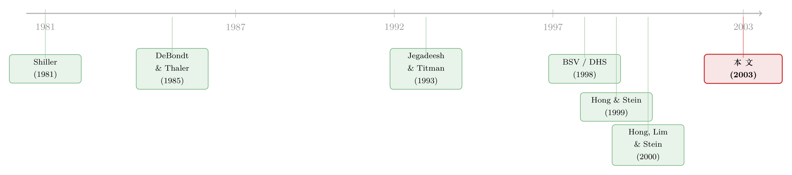

新闻里那条「坏消息」，市场为什么总要慢半拍才信？
本文读的是 Chan (2003, Journal of Financial Economics)：作者手工收集了 1980–2000 年美国公司新闻的标题数据库，把「股价大涨大跌」分成两类——有新闻的和没新闻的。结论很干净：坏消息之后，股价会沿着坏的方向继续漂移 (drift) 长达一年；而没有新闻、却凭空大涨大跌的股票，下个月就会反转 (reversal)。前者是低估，后者是过度反应，且两种模式都主要藏在小盘、流动性差的股票里。
1 一个被忽略的对照组
先说一个几乎所有人都见过、却很少有人认真追问的现象。
打开任何一只股票的月度走势，你总能找到一些「跳水」或「暴涨」的月份。一部分时候，你能立刻给出理由：财报暴雷了、被调查了、大客户跑了。但还有相当一部分时候，你翻遍当月所有的新闻头条，什么都找不到——价格就是动了，动得很猛，却没有任何可以归因的公开消息。Shiller (1981) 当年那句著名的论断，说的正是这件事：股价的波动，远远超过了股利变化所能解释的范围，市场里似乎存在「过度波动 (excess volatility)」。
于是一个很自然、却长期被研究者绕开的问题浮出水面：「有新闻的大涨大跌」和「没新闻的大涨大跌」，事后的走势一样吗？
这个问题之所以重要，是因为过去三十年的资产定价文献，其实一直在两个看似矛盾的事实之间反复横跳。一边，是 Jegadeesh and Titman (1993) 发现的动量 (momentum)——过去赢家继续赢、过去输家继续输，价格在「漂移」，像是市场对信息反应不足；另一边，是 DeBondt and Thaler (1985) 发现的长期反转——三到五年的尺度上，过去的赢家会变成输家，像是市场反应过度。同一个市场，既低估又高估，到底取决于什么？
Chan (2003) 给出的答案是：取决于这次价格变动背后，到底有没有公开新闻。 这就是贯穿全文的那一个核心。
2 识别策略：用「标题」给价格变动贴标签
要回答上面的问题，最关键的一步，是要有一把尺子，能把「市场已经知道了什么」从价格里剥离出来。作者用的这把尺子，朴素得近乎笨拙——新闻标题 (headline)。
具体做法是这样的。作者从道琼斯交互出版物库 (Dow Jones Interactive Publications Library) 里，手工检索每一只样本股票被点名出现在某篇报道的标题或导语中的日期。注意几个刻意的取舍：
- 只记「有没有」，不记「有多少」。 同一天关于同一家公司的多篇报道，只算作一次「这天有新闻」。这是为了避免后期（媒体发达、报道铺天盖地）的样本压倒前期。
- 只收最大众的渠道。 只保留订阅量超过 50 万、每日出版、覆盖 1980–2000 大部分时段的来源（《华尔街日报》、美联社新闻线、《纽约时报》、以及全部道琼斯新闻线等），剔除杂志、投资通讯、分析师报告——因为这些要么说不清哪天公开，要么不是「最广泛受众」能拿到的。
有了这张标签表，识别的设计就呼之欲出了。每个月，作者把所有股票分成两摞：当月有过至少一条标题的（news），和一条都没有的（no-news）。然后在 news 这一摞里，按当月原始收益率 (raw return) 排序，取最高的三分之一作「好消息 (good news)」组，最低的三分之一作「坏消息 (bad news)」组。
这里有一个容易被忽略、却极其聪明的设计：no-news 这一摞，并不是用它自己的收益率断点来分赢家输家，而是借用 news 组的收益率断点去切。这样一来，「有新闻的赢家」和「没新闻的赢家」在事件月 (time t) 的收益量级是对齐的——它们经历了同等幅度的价格冲击。于是 no-news 组就成了 news 组天然的「对照组」：事件月看起来一模一样，唯一的区别就是有没有公开消息。事后两组走势若分道扬镳，差异就只能归因于「新闻」这个标签本身。
剩下的就是标准动作了。作者用 Jegadeesh and Titman (1993)、Fama (1998) 的滚动组合 (rolling-portfolio) 法，构造重叠 (overlapping) 的等权组合，跟踪事件月之后1 到 36 个月的表现。异常收益 (abnormal return) 的算法采纳了 Daniel and Titman (1997) 的思路——用规模 (size) 和账面市值比 (book-to-market) 匹配组合的同期收益作基准，相减得到特征调整后的异常收益，而不是去估因子 beta。检验统计量就是日历月收益时间序列的均值除以其标准误，在「无系统性异常表现」的原假设下服从标准正态。
值得一提的是，作者刻意不对动量做任何调整——因为他想检验的，恰恰是「对新闻的反应」这个动量可能的成因，把动量调掉就等于把要研究的东西扔了。
3 数据
样本是 CRSP 月度数据（含退市收益）里随机抽取的约四分之一股票，因为标题是手工检索的，劳动密集，没法全样本来一遍。结果是一套 4,200 多只股票的数据，1980 年 1 月底在世的有 766 只，到 2000 年 12 月底超过 1,500 只。样本期 1980–2000，观测单位是「股票–月」。
几个值得记住的描述性事实（来自 Table 1）：
- 每个月大约有一半的样本股票当月有新闻，这个比例从期初的约
40%升到期末的约60%，与媒体覆盖逐年改善一致。 - 平均不到 5% 的股票在一个月里有 5 天以上的新闻。
- 新闻的发生和公司特征的横截面相关性：与对数市值的相关系数平均
0.37（大公司更容易上头条），与当月收益率只有0.01（头条并不偏向好消息），与换手率0.16（流动性高的股票更受媒体青睐，或者说新闻引发了更多交易）。
这第三组相关系数其实已经埋下了全文最后的伏笔：新闻天然地偏爱大盘股，而 no-news 组系统性地更小、更不流动。 记住这一点。
4 主要结果：两种「错」，分别错在哪
故事到这里出现了第一次反转。
作者发现，有新闻的股票表现出动量，没新闻的股票则没有。 更精细地拆开看：
第一，坏消息之后是漂移，而且漂得很久。 带着坏公开消息的股票，会沿着负的方向持续下跌，长达 12 个月。也就是说，价格对坏消息的吸收是缓慢的——市场明明看到了头条，却迟迟不肯把它充分计入价格。相比之下，好消息组的漂移要弱得多。这是一种典型的反应不足 (underreaction)。
第二，没新闻的大涨大跌，下个月就反转。 那些当月没有任何头条、却凭空大涨或大跌的股票，会在随后一个月出现统计上显著的反转。而且这个反转在控制了规模和账面市值比之后依然显著。这正是对「凭空波动」的过度反应 (overreaction) 的镜像——价格被某种看不见的力量推过了头，随后被纠回来。
作者很诚实地指出，no-news 组的月度反转，也可能部分来自买卖价差的「跳动 (bid–ask bounce)」——毕竟这些股票又小又不流动。他用了几种办法去控制（剔除低价股、用月度而非周度数据来压低 bid-ask bounce、Roll (1983) 所描述的那类问题），反转依然在，只是会衰减。这是这篇文章在识别上最需要打问号的地方，后面再谈。
第三，也是最点题的一条——所有这些效应，主要活在小盘、流动性差的股票里。 剔除低价股后效应减弱但仍在；而在更小、更不流动的股票里，效应明显更强。作者据此给出了一个统一的解释：有些投资者对信息反应迟钝，而交易成本又挡住了套利者，让他们没法把这个时滞抹平。
这里还有一个漂亮的佐证：大部分坏消息的漂移，恰恰发生在做空更贵这件事上。 漂移主要出现在低收益（坏消息）那一侧，而做空股票本就比买入更费钱、更受限。这就解释了为什么「明知道它还要跌」的钱迟迟不进场——不是看不见，是套不动。作者还进一步指出，大多数坏消息的漂移，发生在后续没有盈余公告的月份里——也就是说，这个漂移不是「等下一份财报来揭晓」那种信息释放，而更像是信息在摩擦中缓慢扩散。
（关于「动量利润其实大半发生在最难交易的那批股票上」这一点，可参见《动量利润的「纸面富贵」：当赚钱的股票，恰好是最难交易的那批》；而把动量按交易拆开来看的视角，则见《动量到底是谁干的？——把成交单拆成大小两摞来看》。）
5 这对三个理论意味着什么
为什么要费这么大劲，去分「有没有新闻」？因为这恰好能在三个相互竞争的行为金融理论之间，撑开一道缝。
- DHS（Daniel, Hirshleifer, and Subrahmanyam, 1998）：投资者过度自信、且有「自我归因偏差」，于是过度看重自己的私人信息、低估公开信号。推论是——对公开信息反应不足，对私人信息反应过度。
- BSV（Barberis, Shleifer, and Vishny, 1998）：基于「保守主义」和「代表性启发」，投资者会依据过去一连串的盈利实现去更新对未来的看法，于是对新闻是过度还是不足，取决于过去新闻流的样子。
- HS（Hong and Stein, 1999）：不绑定具体心理偏差，而是设两类交易者。一类「消息观察者」只看新闻、不看价格；另一类「动量交易者」只看价格、不看新闻。结果是先对新闻反应不足，后对价格反应过度。
把 Chan 的实证摆进去对照：坏的公开新闻引发持续漂移（对公开信息反应不足），无新闻的纯价格冲击引发反转（对价格里隐含的私人信号反应过度）。这既和 DHS「投资者只挑支持自己先验的新闻看、却对私人信号反应过度」的图景吻合，但更贴合 HS ——一部分人慢吞吞地消化新闻，另一部分人则是追着价格走的反馈交易者。作者自己的措辞是：结果「even more supportive of the HS idea」。
这也正是这篇文章方法论上的真正贡献：DHS 和 HS 在「私人信号」这件事上很难分开（因为你几乎找不到一个事前就保证「不含任何私人信号」的价格变动），而 Chan 用一个新闻标题数据库，硬是给「公开 vs. 非公开」划了一条可操作的线。
还有一个不该被埋没的细节：作者强调他的数据集没有选择偏差 (selection bias)。Fama (1998) 曾批评异常反应文献只盯着那些「碰巧有有趣结果」的事件（盈余公告、分拆、回购……），而那些类似却平平无奇的事件从不被报道。Chan 的做法是「sample all forms of news」——把一段时间内所有上了头条的公司都收进来，于是能检验：在一个比以往宽得多的事件类别上，反应不足/过度到底还在不在。
6 文献脉络
把这条线索捋一捋，会发现它其实是两股水流的交汇。
一股是「过度波动 / 过度反应」：Shiller (1981) 指出股价波动超出股利所能解释，DeBondt and Thaler (1985) 发现长期反转，French and Roll (1986) 发现开市时段的方差更大、交易本身在制造波动，Roll (1988) 用 R² 说明个股收益里有大量无法被宏观因子解释的部分——这些都指向「投资者对某些非信息的刺激反应过度」。
另一股是「反应不足 / 漂移」：从盈余公告后漂移 (Bernard and Thomas, 1990)，到 Jegadeesh and Titman (1993) 的横截面动量，价格似乎总要慢半拍才把信息吃进去。

到了世纪之交，三篇理论文章——BSV (1998)、DHS (1998)、HS (1999)——试图用一个统一的行为框架把「短期反应不足、长期反应过度」一并解释。而紧随其后的实证，开始往「信息扩散的摩擦」上找证据：Hong, Lim, and Stein (2000) 发现动量在无分析师覆盖的股票里最强，说明信息传播得越慢、漂移越大。Chan (2003) 正好嵌在这个节点上——它不去造新的理论，而是用一套干净的新闻标签数据，去检验这些理论的关键假设：对公开信息和私人信号的反应，是不是真的不一样。
（顺着「信息在摩擦中缓慢扩散」这条线，还可以看《被「同一批股东」拖慢的消息：当机构持股反而让信息扩散得更慢》和《大公司先动，小公司后知——一条藏在「行业」里的信息暗线》。）
7 评论与延伸（Q&A + 研究方向）
(a) 几个可能的疑问
Q：这和「盈余公告后漂移 (PEAD)」不就是一回事吗？
不是，而且作者专门做了切割。他发现大多数坏消息的漂移发生在没有盈余公告的月份里——也就是说，漂移不是靠下一份财报去逐步揭晓的，更像是信息本身在投资者之间缓慢扩散。PEAD 是「定时披露」后的反应不足，Chan 处理的是所有上头条的新闻，类别宽得多，且刻意把财报月剔开来看。
Q：no-news 组的月度反转，会不会只是买卖价差的「跳动」造的假象？
这是最该警惕的点，作者也承认。他用月度（而非周度）数据来压低 bid-ask bounce，剔除低价股，反转衰减但不消失。不过坦白讲，这类微观结构噪声很难彻底洗干净，尤其 no-news 组系统性地更小更不流动。我认为这一侧的结论稳健性，弱于坏消息漂移那一侧。
Q：「没有新闻」会不会只是「我的数据库没收到这条新闻」？
完全可能，这是测量上的硬伤。作者只收最大众的渠道，早期样本尤其可能漏掉新闻。但他给了一个巧妙的辩护：如果 no-news 组里其实混进了大量「真有新闻只是没被捕捉到」的股票，那只会让 news 和 no-news 两组趋同，从而削弱而非制造两组的差异。换句话说，测量误差是在和他的结论作对，结论仍然成立，说明真实差异可能更大。
Q：为什么漂移主要在「坏消息」一侧，而不是对称的？
作者把它归到套利的不对称上——做空比做多更贵、更受限。坏消息要靠卖空才能纠偏，而卖空的摩擦更大，于是「明知要跌」的钱进不来，漂移就拖得更久。这也和「效应集中在小盘、illiquid 股票」相互印证。
Q：既然效应只在小盘、不流动的股票里，那它还有经济意义吗，还是只是没法套利的「纸面收益」？
这正是这篇文章诚实的地方——它没有把结论包装成一个能赚钱的策略，反而强调「交易成本阻止了套利者抹平时滞」本身就是机制的一部分。从资产定价角度，它告诉你的是市场为什么会这样，而不是你能从中赚多少。
Q：它到底支持 DHS 还是 HS？
两者都沾边，但作者的判断是更偏 HS。HS 的核心是「一部分人只看新闻、慢慢反应，另一部分人只看价格、追涨杀跌」，这与「公开坏消息→漂移、无新闻价格冲击→反转」的组合最契合。DHS 那套「过度自信 + 自我归因」也兼容，但和 HS 在实证上难以严格区分。
(b) 几个可能的研究问题与提案
1. 把这套「新闻 vs. 无新闻」的标签搬到公司债市场。 【经济故事】公司债市场比股票更不透明、更不流动，且做空近乎不可能——按 Chan 的逻辑，「坏消息漂移」在债市应当更强、更持久。而且债券对坏消息（违约风险上升）天然更敏感，这是一个干净的非对称检验场。 【可行性】中。需要把 TRACE 的债券月度收益与一套发行人新闻标题库（可用 RavenPack 或 LLM 抽取的 Dow Jones 标题）对齐，按发行人当月有无新闻分组。识别上要小心债券流动性的度量误差（成交稀疏）。数据可得，工程量不小，但 doable。
2. 用机器可读的新闻情绪，把「好/坏」从「涨/跌」里独立出来。 【经济故事】Chan 用当月收益率的高低来代理好坏消息，这其实把「消息的符号」和「价格的反应」混在了一起。如果用 NLP/LLM 直接读出标题的情绪极性，就能检验：在控制了情绪之后，价格反应不足是否仍然存在，从而把 BSV「取决于过去新闻流」的预测真正检验起来。 【可行性】高。RavenPack、或对历史头条跑一个情绪分类器，技术上已经很成熟；CRSP 收益现成。主要风险是早期样本（1980s）的新闻文本可得性。
3. 外资持有人会不会是「消息观察者」，本地散户是「反馈交易者」？ 【经济故事】HS 的两类交易者，能不能映射到真实的投资者群体？一个猜想是：信息处理能力强的机构/外资对公开新闻反应更快（漂移更小），而本地散户更容易对无新闻的价格冲击追涨杀跌（反转更大）。 【可行性】中。需要带投资者类型的持仓/成交数据（如韩国 KSD、台湾的分户成交簿），把 news/no-news 分组与各类投资者的净买入对齐。识别可信，但数据门槛高，且只能在少数披露细颗粒度成交的市场做。
4. 「漂移发生在无后续新闻的月份」——能不能反过来用作市场效率的尺子？ 【经济故事】Chan 顺带说明，漂移大多发生在「没有更多信息释放」的时期，由此推断是摩擦在拖慢信息扩散。可以把「漂移有多少落在无新闻月 vs. 有新闻月」做成一个信息扩散速度指标，跨股票、跨时间比较，看它和分析师覆盖、机构持股、流动性的关系。 【可行性】高。所需数据与本文几乎一致，只是把因变量换成「漂移的时间分布」。是对 Hong-Lim-Stein (2000) 的一个自然延伸。
8 参考文献与我的判断
我的判断。 这篇文章的贡献，不在于发现了「漂移」或「反转」——这两件事在 2003 年都已不新鲜——而在于它造了一个对照组：用新闻标题，把「市场已知」从价格里剥出来，于是「有新闻的漂移」和「无新闻的反转」第一次被放在同一张桌子上、用对齐的事件月收益做对比。这个设计干净、思路质朴，却恰好卡在 DHS/BSV/HS 三个理论争论的缝隙上，把「对公开信息 vs. 私人信号反应是否不同」这个原本难以检验的假设，变成了可操作的实证。
对识别的担忧，我有两点。 其一，「无新闻」的定义高度依赖数据库的覆盖完整性，早期样本尤其可疑——作者的辩护（测量误差只会削弱结论）是有说服力的，但 no-news 这一侧本就更弱。其二，月度反转和买卖价差跳动、以及小盘股的微观结构噪声纠缠太深，控制之后「衰减但仍在」，这意味着反转那一半结论的稳健性，要打一个比漂移更大的折扣。
后续我最想看到的， 是把这套标签法搬到一个做空更难、流动性更差、且非对称更明显的市场——公司债是最自然的实验场。如果坏消息漂移在债市更强、更久，那么 Chan 的「套利摩擦阻止纠偏」机制，就能在一个独立的市场上得到再确认；如果不强，那我们对这个机制的理解就得重写。
参考文献
- Barberis, N., Shleifer, A., Vishny, R. (1998). A model of investor sentiment. Journal of Financial Economics 49, 307–343.
- Bernard, V.L., Thomas, J.K. (1990). Evidence that stock prices do not fully reflect the implications of current earnings for future earnings. Journal of Accounting and Economics 13, 305–340.
- Chan, W.S. (2003). Stock price reaction to news and no-news: drift and reversal after headlines. Journal of Financial Economics 70(2), 223–260.
- Daniel, K.D., Hirshleifer, D., Subrahmanyam, A. (1998). Investor psychology and security market under- and over-reactions. Journal of Finance 53, 1839–1885.
- Daniel, K.D., Titman, S. (1997). Evidence on the characteristics of cross-sectional variation in common stock returns. Journal of Finance 52, 1–33.
- DeBondt, W.F.M., Thaler, R.H. (1985). Does the stock market overreact? Journal of Finance 40, 793–808.
- Fama, E.F. (1998). Market efficiency, long-term returns and behavioral finance. Journal of Financial Economics 49, 56–63.
- French, K.R., Roll, R.W. (1986). Stock return variance: the arrival of information and the reaction of traders. Journal of Financial Economics 19, 3–30.
- Hong, H., Stein, J. (1999). A unified theory of underreaction, momentum trading and overreaction in asset markets. Journal of Finance 54, 2143–2184.
- Hong, H., Lim, T., Stein, J. (2000). Bad news travels slowly: size, analyst coverage, and the profitability of momentum strategies. Journal of Finance 55, 265–295.
- Jegadeesh, N., Titman, S. (1993). Returns to buying winners and selling losers: implications for stock market efficiency. Journal of Finance 48, 65–91.
- Roll, R.W. (1983). On computing mean returns and the small firm premium. Journal of Financial Economics 12, 371–386.
- Roll, R.W. (1988). R². Journal of Finance 43, 541–566.
- Shiller, R.J. (1981). Do stock prices move too much to be justified by subsequent changes in dividends? American Economic Review 71, 421–498.